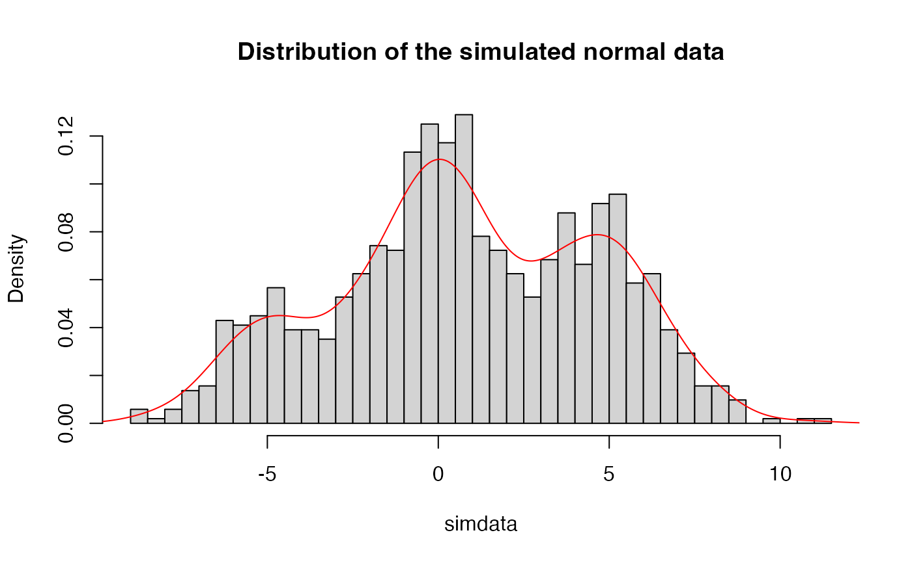

MCMC Sampler for the Hidden Markov Model with Normal emission densities
Source:R/MCMC_normal.R
hmm_mcmc_normal.RdMCMC Sampler for the Hidden Markov Model with Normal emission densities
Usage
hmm_mcmc_normal(
data,
prior_T,
prior_means,
prior_sd,
iter = 600,
warmup = floor(iter/5),
thin = 1,
seed = sample.int(.Machine$integer.max, 1),
init_T = NULL,
init_means = NULL,
init_sd = NULL,
print_params = TRUE,
verbose = TRUE
)Arguments
- data
(numeric) normal data
- prior_T
(matrix) prior transition matrix
- prior_means
(numeric) prior means
- prior_sd
(numeric) a single prior standard deviation
- iter
(integer) number of MCMC iterations
- warmup
(integer) number of warmup iterations
- thin
(integer) thinning parameter. By default,
1- seed
(integer)
optional parameter; seed parameter- init_T
(matrix)
optional parameter; initial transition matrix- init_means
(numeric)
optional parameter; initial means- init_sd
(numeric)
optional parameter; initial standard deviation- print_params
(logical)
optional parameter; print parameters every iteration. By default,TRUE- verbose
(logical)
optional parameter; print additional messages. By default,TRUE
Value
List with following elements:
data: data used for simulationsamples: list with samplesestimates: list with various estimatesidx: indices with iterations after the warmup periodpriors: prior parametersinits: initial parameterslast_iter: list with samples from the last MCMC iterationinfo: list with various meta information about the object
Details
Please see supplementary information at doi:10.1186/s12859-024-05751-4 for more details on the algorithm.
For usage recommendations please see https://github.com/LynetteCaitlin/oHMMed/blob/main/UsageRecommendations.pdf.
References
Claus Vogl, Mariia Karapetiants, Burçin Yıldırım, Hrönn Kjartansdóttir, Carolin Kosiol, Juraj Bergman, Michal Majka, Lynette Caitlin Mikula. Inference of genomic landscapes using ordered Hidden Markov Models with emission densities (oHMMed). BMC Bioinformatics 25, 151 (2024). doi:10.1186/s12859-024-05751-4
Examples
# Simulate normal data
N <- 2^10
true_T <- rbind(c(0.95, 0.05, 0),
c(0.025, 0.95, 0.025),
c(0.0, 0.05, 0.95))
true_means <- c(-5, 0, 5)
true_sd <- 1.5
simdata_full <- hmm_simulate_normal_data(L = N,
mat_T = true_T,
means = true_means,
sigma = true_sd)
simdata <- simdata_full$data
hist(simdata,
breaks = 40,
probability = TRUE,
main = "Distribution of the simulated normal data")
lines(density(simdata), col = "red")

# Set numbers of states to be inferred
n_states_inferred <- 3
# Set priors
prior_T <- generate_random_T(n_states_inferred)
prior_means <- c(-18, -1, 12)
prior_sd <- 3
# Simmulation settings
iter <- 50
warmup <- floor(iter / 5) # 20 percent
thin <- 1
seed <- sample.int(10000, 1)
print_params <- FALSE # if TRUE then parameters are printed in each iteration
verbose <- FALSE # if TRUE then the state of the simulation is printed
# Run MCMC sampler
res <- hmm_mcmc_normal(data = simdata,
prior_T = prior_T,
prior_means = prior_means,
prior_sd = prior_sd,
iter = iter,
warmup = warmup,
seed = seed,
print_params = print_params,
verbose = verbose)
res
#> Model: HMM Normal
#> Type: MCMC
#> Iter: 50
#> Warmup: 10
#> Thin: 1
#> States: 3
summary(res) # summary output can be also assigned to a variable
#> Estimated means:
#> mean[1] mean[2] mean[3]
#> -12.8273697 0.7618541 2.3870811
#>
#> Estimated standard deviation:
#> 3.818152
#>
#> Estimated transition rates:
#> 1 2 3
#> 1 0.030978791 0.9690212 0.00000000
#> 2 0.009017274 0.9155497 0.07543306
#> 3 0.000000000 0.9870069 0.01299307
#>
#> Number of windows assigned to hidden states:
#> 1 2 3
#> 0 1024 0
#>
#> Approximate Kullback-Leibler divergence between observed and estimated distributions:
#> 0.01183443
#>
#> Log Likelihood:
#> mean sd median
#> -2832.308384 5.266126 -2830.956964
#>
#> P-value of t-test for difference between means of states (stepwise):
#> 1-2 2-3
#> NA NA
#>
coef(res) # extract model estimates
#> $means
#> mean[1] mean[2] mean[3]
#> -12.8273697 0.7618541 2.3870811
#>
#> $sd
#> [1] 3.818152
#>
#> $mat_T
#> [,1] [,2] [,3]
#> [1,] 0.030978791 0.9690212 0.00000000
#> [2,] 0.009017274 0.9155497 0.07543306
#> [3,] 0.000000000 0.9870069 0.01299307
#>
# plot(res) # MCMC diagnostics